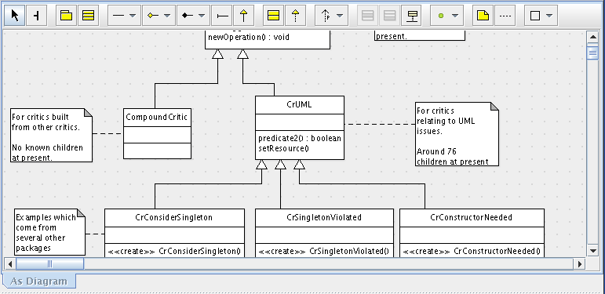

ArgoUML's Editing Pane is the main work area. You use this pane to edit diagrams. To this end, it contains a toolbar at the top, which contains all items (ModelElement) that can be drawn on the current type of diagram. Clicking on a tool-icon in the toolbar selects the type of ModelElement that will be placed by a simple click in the diagram area. The toolbar also contains some general drawing tools, for diagram decoration with lines, text, and shapes, which are not part of the UML model.
Back to ArgoUML Tours
Back to ArgoUML Home